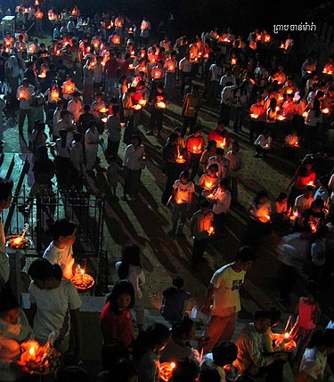
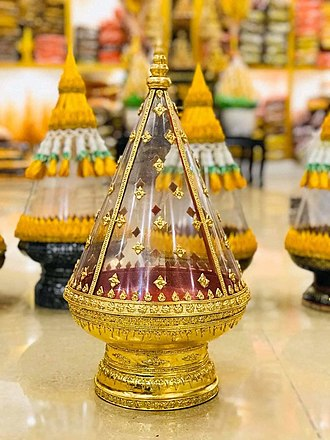
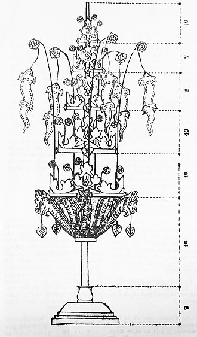
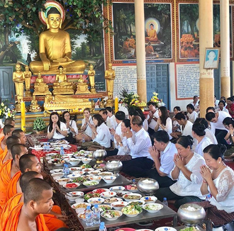
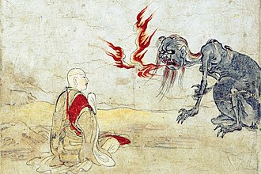
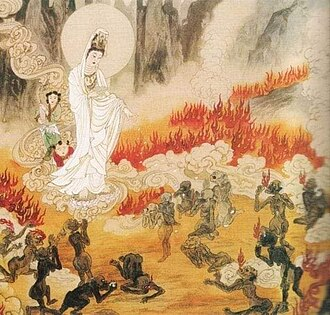
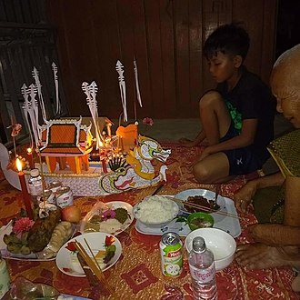
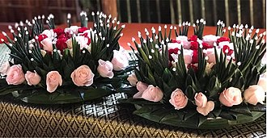

ភ្ជុំបិណ្ឌមានន័យថា ការប្រមូលផ្ដុំដុំបាយឱ្យមកជួបជុំគ្នា ក្នុងពិធីឧទ្ទិសបាយម្ហូបអាហារ ជូនដល់ដូនតាដែលបានចែកឋានទៅ ដែលជាសាច់ញាតិទាំង ៧សណ្ដាន ដែលមានទំនាក់ទំនងពីមុនមកនិងសមីខ្លួនដែលនៅរស់ ដើម្បីបានអាហារទាំងនោះទៅព្រលឹងខ្មោចដូនតារបស់ពួកគេ ពួកគេត្រូវរៀបចំបាយម្ហូបយកទៅប្រគេនព្រះសង្ឃ ដើម្បីសូត្រធម៌ជាកិច្ចចម្លងម្ហូបអាហារទាំងនោះទៅកាន់សាច់ញាតិរបស់ពួកគេ ។ ពិធីបុណ្យភ្ជំុបិណ្ឌ តែងប្រារព្ធឡើងនៅរៀងរាល់ខែភទ្របទ នៅថ្ងៃ១ រោច រហូតដល់វេលា ១៥ រោច ដែលគុណគូ ទៅតាមប្រតិទិន នៃចន្ទគតិ តាមជំនឿពីបុរាណ គេនិយមយកបាយបត្តបូរ ដែលមានន័យថា បាយបំពេញបាត្រ គ្របដោយសារជី យកទៅរាប់បាត្រនាពេលព្រឹកព្រលឹមដើម្បី ប្រគេនភិក្ខុសង្ឃ នៅជុំវិញព្រះវិហ៊ារ ដែលភិក្ខុសង្ឃនិងដើរពីស្ដាំទៅឆ្វេង តាមក្បួនឧត្តរាព័ទ្ធ ដំណើរវិលបញ្ច្រាសទ្រនិច្ចនាឡិកា តំណាងឱ្យពេវេលាមុនៗ របស់មនុស្សដែលស្លាប់ទៅ ហើយសាច់ញាតិពួកគេ និង ឧទ្ទិសបាយទាំងនេះ ជាផលបុណ្យជូនទៅបុគ្គលដែលជាសាច់ញាតិពួកគេដែលជាប់ឃុំឃាំងនៅឋានរក ដើម្បីទុកជាកុសលជូនសាច់ញាតិពួកគេដើម្បីរំដោះកម្ម ។ ការរាប់បាត្រ រមែងធ្វើឡើងនៅជុំវិញព្រះវិហ៊ារ តែបច្ចុប្បន្ន ព្រះសង្ឃ និង គណៈអាចារ្យវត្តមួយចំនួនធំនៅ កម្ពុជា បែរជានាំពុទ្ធបរិស័ថ មករាប់បាត្រ នៅសាលាឆាន់ទៅវិញ ដែលជាភាពខុសឆ្គង ពីទំនៀមរបស់ខ្មែរបុរាណ ក្រោយបញ្ចប់ពិធីរាប់បាត្រ ក៏បន្តមកពិធីសូត្រធម៌បង្សុកូល ដែលមានន័យថា ជាកិច្ចសូត្រធម៌ទានចម្លងអាហារ ទៅកាន់ព្រលឹងខ្មោចដែលជាសាច់ញាតិរបស់ពួកគេ ដើម្បីឱ្យខ្មោចញាតិរបស់ពួកគេទទួលបានអាហារទាំងអស់នេះ ដែលកិច្ចពិធីនេះរមែងធ្វើឡើងនៅសាលាឆាន់នេះឯង ។
កន្ទោងបាយ គឺជា បាយសិង្ឃាដក៍ ដែលមានន័យថាបាយដែលគេពូតជាដុំៗ ពី១ដុំ ដល់ ១៥ដុំ តំណាងឱ្យថ្ងៃ១រោច ដល់ ១៥រោច រួចគេយកទៅដាក់សែននៅតាមកែងផ្លូវ ឬ កែងរបងវត្ត ដែលសន្មតថាជាបាយតំណាងឱ្យផ្លូវបែកជា៣ ឬ ផ្លូវបែកជា៤ ដើម្បីហៅពួកព្រលឹងខ្មោចផ្សេងៗ ឱ្យជួយស្វែងរកខ្មោចញាតិរបស់ពួកគេ ដើម្បីជួយនាំផ្លូវព្រលឹងខ្មោចញាតិរបស់ពួកគេមកកាន់តំបន់ខ្លួនរស់នៅ ព្រោះខ្លាចក្រែងញាតិរបស់ពួកគេស្វែងរកពួកគេគ្រប់៧វត្ត មិនឃើញក៏ជេរប្រទេចដាក់បណ្ដាសារកូនចៅខ្លួន ឱ្យលំបាលក្រក្សត់វេទនាផ្សេងៗ ។
ពិធីកាន់បិណ្ឌ គឺជាពិធីបុណ្យរបស់ ពិធីបុណ្យភ្ជំុបិណ្ឌ ដែលគេចែករយៈពេលកាន់បិណ្ឌចំនួន ១៤ថ្ងៃ ដែលចាប់ផ្ដើមពីថ្ងៃ ១រោច រហូតដល់ ១៤រោច ខែភទ្របទ ឬ (កន្លះខែ) រីឯ ព្រះរាជពិធីកាន់បិណ្ឌរបស់ព្រះមហាក្សត្រ មានរយៈពេលតែ ៥ថ្ងៃ ប៉ុនណោះ ដែលរាប់ពីថ្ងៃ ១១រោច រហូតដល់ថ្ងៃកំណត់ ១៥រោច ភ្ជុំបិណ្ឌ ។ ដើម្បីផ្ដើមពីធីកាន់បិណ្ឌទៅបាន ពុទ្ធបរិស័ទ ត្រូវមានផ្កាបិណ្ឌ ផ្កាបិណ្ឌ មានកម្ពស់ ៦០ សង់ទីម៉ែត្រ ធ្វើអំពីឈើ សំណុំផ្កាខាងក្រោមធំ តូចខាងលើ មានបង្គោលមូល១ ទំហំគល់ប៉ុនមេដៃ ទំហំចុងប៉ុនកូនដៃ ដាក់ចំកណ្ដាល សម្រាប់ដាក់កង់ធ្វើថ្នាក់ ផ្កាបិណ្ឌមានថ្នាក់៥ ថ្នាក់និមួយៗ មានកម្រាសប៉ុនម្រាមដៃ ថ្នាក់ក្រោមទំហំ ៥ធ្នាប់ ស្មើ ១០ សង់ទីម៉ែត្រ មូលដូចកង់ ចោះចំកណ្ដាលកង់សិតភ្ជាប់និងបង្គោល គេរចនាដោយស្ពាន់ និងបិទដោយពណ៌ផ្សេងៗ តាមចំណង់ចំនូលចិត្ត បិទភ្ជាប់ជុំវិញកង់ទាំង៥ថ្នាក់ មានដោតផ្កាញ័រ ធ្វើពីស្ព័នផងដែរ ហើយថ្នាក់ខាងក្រោមបង្អស់ គេដោតទង់ក្រពើចំនួន ៥ ដែលធ្វើពីឬស្សី គេមានបន្ថែមរូបនាគបួន មានក្ទុយរួមនិងគល់ផ្កាបិណ្ឌ ក្នុងមាត់នាគ មានរូបស្លឹកពោធ៍សំយុងចុះ ដែលបង្ហាញពីនាគទ្រផ្កាបិណ្ឌ មានឈើបួន ជ្រុងដូចប្រអប់ កម្រាស់ ៨ធ្នាប់ដៃ ឬ ១៥ សង់ទីម៉ែត្រ ធំខាងក្រោមតូចលើ បន្ថែមជាជើងទម្រផ្កាបិណ្ឌ មានផ្កាបិណ្ឌយ៉ាងប្រណិតហើយ ទើបសមប្រកបក្នុងពិធីកាន់បិណ្ឌ ដែលជាពីធីធ្វើចង្ហាន់បិណ្ឌបាត្រ ប្រគេនចំពោះព្រះសង្ឃ ដែលខុសប្លែក ពីចង្ហាន់បិណ្ឌបាត្រធម្មតា ត្រង់អត្ថន័យសំខាន់ នៃផ្កាបិណ្ឌនេះ តំណាងឱ្យកាបូជាចំពោះ ព្រះកេសា (សសៃសក់) របស់ព្រះសម្មាសម្ពុទ្ធ ដែលព្រះពុទ្ធជាម្ចាស់បានកាត់នៅកេសារបស់ខ្លួន នៅពេលដែលទ្រង់យាងចាករាជសម្បត្តិ ក្នុងការចេញមកសាងផ្នួស ។
ពិធីបុង្សកូល គឺជាពិធីរំលឹកវិញ្ញាណក្ខន្ធ ដើម្បីជាកិច្ច តបស្នងសងគុណ និង ជួយរំដោះទុក្ខទោស ដល់ បុព្វការី ជន របស់ខ្លួន មិនថា ជាសាច់ញាតិ ឬ សត្វឃាត ដែលពួកគេបានសម្លាប់យកសាច់ជារៀងរាល់ថ្ងៃនោះទេ ពួកគេត្រូវ ឧទ្ទិសកុសលផលបុណ្យទាំងនេះឱ្យសត្វទាំងនោះ មិនថា សត្វត្រី ជ្រូក គោ មាន់ ទា ឬ សត្វដែលពួកគេសម្លាប់ជារៀងរាល់ថ្ងៃដើម្បីទទួលបាននូវប្រាក់កម្រៃក្នុងការចិញ្ចឹមជីវិតផ្សេងៗ ការបុង្សកូលនេះហើយ បានរួមចំណែកលាងនៅអំពើបាបរបស់ពួកគេផងដែរ តាមរយៈការឧទ្ទិសផលបុណ្យនេះឯង កិច្ចពិធីបង្សុកូល រមែងធ្វើនៅ ឧបដ្ឋានសាលា សាលាឆាន់ ឬ នៅកុដភិក្ខុសង្ឃផ្ទាល់ មិនថាគ្រប់កាលៈទេសៈដែលកើតមាននូវការផ្ដើមកម្មវិធីបុណ្យ សុទ្ធតែទាក់ទងនិងកិច្ចបង្សុកូលនេះ ។
នៅតាមទីវត្តអារាមមួយចំនួន បានយល់ច្រឡំកិច្ចពិធី ពូនភ្នំខ្សាច់ ដែលប្រារព្ធក្នុងរដ្ឋប្បវេណី នៃពិធីបុណ្យ ចូលឆ្នាំខ្មែរ យកមកលាយឡំ នៅក្នុងពិធីបុណ្យភ្ជុំបិណ្ឌ ទៅតាមវត្តអារាមមួយចំនួន ដែលផ្ទុយពីនិទានសាសនា និង ទំនៀមទម្លាប់ខ្មែរបុរាណទាំងស្រុង កិច្ចពិធីដែលមានចែងក្នុង ពិធីទ្វារទសមាស ក្នុងវេលាកាន់បិណ្ឌនេះគេ ហៅថា ពិធីបំបួសភ្នំខ្សាច់ ។ ពិធីបំបួសភ្នំខ្សាច់ តាមទំនៀមខ្មែរបុរាណ កាលបើគេជញ្ជូនដីខ្សាច់មកចាក់គរពូនឱមានទ្រង់ទ្រាយប្រហែលភ្នំ មានកំពស់ និង ទំហំល្មមតាមដែលគេត្រូវការឡើងហើយ គេច្រើនយកក្អមទាំងមូលមកកប់ឱ្យនៅត្រឹមក ដាក់ត្រង់កំពូល គ្រប់ចេតិយ ឱ្យមានសណ្ឋានដូចក្បាច់កចេតិយមែនទែន, ហើយគេធ្វើរាជវ័តព័ទ្ធជុំវិញ (របងក្បាច់) ពីក្រៅចេតិយទាំងនោះ ទុកតែមាត់ទ្វារចេញចូល ៤ ទិស គេធ្វើរានទេព្តា ៨ ដាក់គ្រប់ ៨ ទិស មានរានមួយទៀត តំណាងឱ្យ ព្រះយមរាជ ដាក់នៅទិសបូព៌ មានទាំងឆត្ររួត និង ទង់រលកទាំង៣ តំណាងឱ្យនិកាយទាំង៣ នៃសាសនាព្រះពុទ្ធ រួមមាន៖
- ទង់រលកទី១ តំណាងនិកាយ មហាយាន
- ទង់រលកទី២ តំណាងនិកាយ ហិនយាន
- ទង់រលកទី៣ តំណាងឱ្យនិកាយ ព្រះសាស្តារ ឬ ព្រះពុទ្ធថេរវាទ ។
គេដោតទង់រលកគ្រប់រានទាំងនោះហើយ ព្រមទាំងបូជាដោយផ្កាភ្ញី និង ស្លាធម៌ ទឹកអប់ ជាដើម ។ គេធ្វើគ្រឿងប្រដាប់ដូចរៀបរាប់ខាងលើនេះរួចហើយ គេយកទៀនធូបទៅអុជ យកផ្កាឈើមានពណ៌ផ្សេងៗ ទៅដោតដាក់បូជា និង យកទង់ក្រពើរធ្វើពីក្រដាស់ពណ៌ផ្សេងៗ ទៅដោតបូជានៅកំពូលចេតិយដែលបង្កប់ជាមួយក្អមទាំងនោះ ហើយមានអាចារ្យម្នាក់នាំឧបាសក់ ឧបាសិកា ដើរប្រទក្សិណ ៣ជុំ រួចគេសូត្រនមស្ការព្រះរតនត្រ័យ សមាទានសីល ហើយយកសំពត់សទៅព័ទ្ធឈៀង ដូចពាក់អង្សាពីលើវាលុកចេតិយទាំងនោះ រួចនាំគ្នាសូត្រអធិដ្ឋានវាលុកចេតិយ ដែលគេហៅតាមសំដីអ្នកស្រុកថា «បំបួសភ្នំខ្សាច់» សូត្រតំណាងព្រះចូឡាមណីចេតិយនៅឯឋានត្រៃត្រឹង្សសួគ៌ដោយបាលីថា ឥមំ វាលុកចេតិយំ ចុឡាមណិចេតិយំ អធិដ្ឋាមិ (ប្រែថា) «ខ្ញុំសូមតាំងចិត្តអធិដ្ឋានព្រះចេតិយខ្សាច់នេះ ឱ្យជារបស់ដំណាងព្រះចូឡាមណីចេតិយ» នៅពេលដែល ដែលភ្នំខ្សាច់បានបំបួសរួចរាល់ ទើបពេលល្ងាចគេធ្វើពិធី ផ្សឹកភ្នំខ្សាច់នោះវិញ ដោយដកយកក្អមដែលកប់នៅកំពូលខ្សាច់ ដែលមានដោតនៅទង់ក្រពើរចំរុះពណ៌នោះ យកមកសូត្រធម៌ផ្សឹកវិញ នៅសាលាឆាន់ គណៈអាចារ្យវត្ត ត្រូវឱ្យ ពុទ្ធបរិស័ទ មកអង្គុយជុំគ្នា ដោយយកដៃម្ខាងភ្ជុំគ្នា លើកភ្នំខ្សាច់នោះ ហើយពុទ្ធបរិស័ទផ្សេងៗទៀត ត្រូវយកដៃមកប៉ះបន្តគ្នា ដើម្បីសម្រេចផលបុណ្យនេះ ។
រៀងរាល់ខែ (ភទ្របទ) ដែលស្ថិតនៅក្រោមផ្ទៃមេឃពោរពេញ ទៅដោយពពកច្រើន បណ្តាលភាព ស្រអាប់ ក្នុងរាត្រីគ្មានពន្លឺព្រះចន្ទ័ ដែលពោពេញដោយភ្លៀងរធ្លាក់ជោគជាំ ជាប្រចាំនេះ គេមានជំនឿថា ស្តេចយមរាជ (Yamaraj) និងបើកទ្វាឋាននរក ចំនួន ១៥ថ្ងៃ ដើម្បីដោះលែងពពួកប្រេត ឱ្យមកស្វែងរកអាហារសុីផង និង ជាក្ដីនឹករលឹកសាច់ញាតិរបស់ពួកគេដែលនៅរស់ផងដែរ ហើយវាជាការជួបញាតមិត្ត និង កូនចៅ របស់ពួកគេ ក្នុងរៀងរាល់១ឆ្នាំម្ដង ដើម្បីទទួលបាននូវកុសលផលបុណ្យ ដែលកូនចៅពួកគេបានធ្វើទានឧទ្ទិសបញ្ចូនមក តែបើកាលណាពួកប្រេតទាំងនោះខំស្វែងរកកុសលផលបុណ្យ របស់កូនចៅពួកគេទាំង ៧វត្ត (Seven Pagoda) នៅតែមិនឃើញ ប្រេតដែលជាញាតិទាំងនោះនិង ដាក់បណ្ដាសារ សាច់ញាតិពួកគេ មិនឱ្យរកទទួលទានអ្វីបាន ដូចខ្លួនដែលជាប្រេតកំពុងរងទុកក្នុងការឃុំឃាំង នៅឋាននរកដូចគ្នា ។
ក្នុងគម្ពីរ តិរោកុឌ្ឌសូត្រ (Khuddaka Nikaya) បានបរិយាយថា ព្រះបាទពិម្ពិសារ (Bimbisara) ដែលកើតនៅឆ្នាំ 558 BC មុនគ.សករាជ ព្រះអង្គមានពួកញាតិមួយក្រុមបានបំពេញទានមិនបរិសុទ្ធ គឺបរិភោគអាហារ មុនព្រះសង្ឃ លុះពេលខាងមុខក៏បានលាចាកលោក ដោយសេចក្ដីប្រមាថទៅលើសាវៈ របស់ព្រះពុទ្ធបរមគ្រូ ក៏បានកើតទៅជាប្រេត ជាប់ឃុំឃាំងនៅឋាននរក ដោយមិនមានអាហារបរិភោគ ។ ពពួកប្រេតទាំងនោះតែងចូលតាមសុបិនទៅពន្យល់សប្តិសុំអាហារបរិភោគ ពីព្រះបាទពិម្ពិសារ ដោយការភិតភ័យក្នុងសុបិន ព្រះអង្គបានសុំឱ្យ អង្គតថាគត នៃព្រះពុទ្ធបរមគ្រូ ឱ្យជួយដោះស្រាយចម្ងល់នេះ ។ ព្រះពុទ្ធបរមគ្រូ បានសម្មាធិដកដួងវិញាណ ទៅកាន់ឋាននរក ក៏បានជួបពពួកប្រេតទាំងនោះកំពុងយំសោក ស្រេកឃ្លានអាហារជាពន់ពេក ព្រះអង្គក៏បានសួរអំពីហេតុការណ៍នេះ ហើយព្រះអង្គទ្រង់សម្ដែងថា "ចាំមើលព្រះបាទពិម្ពិសារជាញាតិ របស់ម្នាលប្រេតទាំងឡាយទ្រង់ឱ្យទានអាហារដល់សាវៈ របស់ តថាគត នោះសាវៈរបស់អត្មាតថាគត និងសូត្រធម៌ចម្លងអាហារទាំងនេះ នឹងញាំងឱ្យសំរេចដល់ម្នាលប្រេតទាំងឡាយ" ទុកជាកុសលផលបុណ្យដែលពួកគេបានឧទ្ទិសមក ។ ពេលនោះហើយទើបកើតមានការវេរចង្ហាន់ប្រគេនព្រះសង្ឃដើម្បីញាំងឱ្យអាហារទាំងអស់នោះបានដល់ ក្រុមញាត្តិការ របស់ពួកគេ ដែលផ្លាំងភ្លាត់ឧបប្រឌិតកើតជាកំណើតបាបកម្មទាំងអស់នេះ ហើយទំនៀមមួយនេះបានប្រតិបត្តិក្នុងសាសនាព្រះពុទ្ធដែលផ្សារផ្ជាប់ទៅនិងល្ធិជំនឿសែនដូនតា របស់ពលរដ្ឋកម្ពុជា មកដល់សព្វថ្ងៃនេះ ។
ពិធីបោះបាយបិណ្ឌ ជាពិធីមួយដែលត្រូវបានប្រារព្ធនៅចន្លោះម៉ោង ៣ និង ម៉ោង ៤ ទាបភ្លឺ ដែលមនុស្សម្នា ត្រូវយកបាយបិណ្ឌនោះទៅបោះឱ្យពពួកប្រេត នៅក្បែរជុំវិញព្រះវិហារ ដើម្បីជាការរំដោះកម្មពៀរពពួកប្រេតទាំងនោះផង និង បានឧទ្ទិសជាអាហារ ឱ្យពពួកប្រេតទាំងនោះផង ។ នៅក្នុងគម្ពី បេតវត្ថុ (Patavatthu) មានការបរិយាយជាច្រើនអំពីពពួកប្រេត ដែលធ្លាប់កើតជាមនុស្ស ហើយមានបាបកម្មច្រើនពេលនៅរស់ ត្រូវបានធ្លាក់ខ្លួនជាប្រេត ដែលត្រូវបានឃុំឃាងនៅឋាននរក នៅពេលដែលបុណ្យកុសលរបស់ពួកគេតិច ពួកគេមិនអាចទៅចាប់ជាតិ និង មិនអាចនៅតែតោល នៅឋានមនុស្សដូចព្រលឹងវិញាណដ៏ទៃទៀតបានឡើយ សូម្បីតែសាច់ញាតិដែលបានឧទ្ទិសអាហារដោយចំឈ្មោះទៅកាន់ពពួកប្រេតទាំងនោះក្ដី ក៏ពួកគេមិនអាចទទួលបាននូវការឧទ្ទិសកុសលនោះឡើយ ពពួកប្រេតទាំងនោះមានការយំសោកបោកខ្លួនជាខ្លាំង ភាពរំជើបរំជួលបានដឹងដល់ សាវៈរបស់ព្រះពុទ្ធបរមគ្រូ នោះព្រះពុទ្ធស្រី ព្រះពោធិសត្វ អវលោកិតេស្វរៈ (Avalokiteśvara) ឬ ព្រះម៉ែគង់សុីអុីម (Guanyin) បានយាងចុះដោយផ្ទាល់ទៅឋាននរក និង បាននិមិតដុំបាយ បោះឱ្យពពួគប្រេតទាំងនោះ "ម្នាប្រេតទាំងឡាយ មុននិងបរិភោគដុំបាយទាំងនេះ ចូលក្ដាប់ដុំបាយទាំងនោះបង្ហាញទៅស្ដេច យមរាជ ដើម្បីជាការរំដោះកម្ម សម្រាលទោស មា្នលប្រេតទាំងឡាយឱ្យរួចចាកផុតទុក្ខ ទៅកើតក្នុងភពដ៏ល្អប្រសើរ" ។ ដូចនិទានអំពីរឿងហេតុរបស់ពពួកប្រេតទាំងនេះទើបកើតមានពិធីបោះបាយបិណ្ឌ នេះកើតឡើង ការដែលយកបាយបិណ្ឌទៅដាក់នៅទីដ៏ទីសមគួរ គឺមិនអាចបានទៅដល់ពពួកប្រេតដែលជាញាតិដែលមានកម្មក្រាសឡើយ រមែងដោយការបោះបាយបិណ្ឌនេះឯង ការបោះបាយបិណ្ឌត្រូវដើរជុំវិញព្រះវិហារ និង បោះវាចេញមកក្រៅរបងព្រះវិហារ ពីព្រោះ ព្រះវិហារនីមួយៗ បានបញ្ចុះនៅខ្សែរសីមា ដែលមានអាថ័នការពារដ៏សាកសិដ្ឋ ដែលព្រលឹង និង វិញាណខ្មោចព្រាយបិសាចទាំងអស់មិនអាចទៅរំលោភបំពាន របងព្រំរបស់ព្រះវិហារវត្តបានឡើយ ដូចនេះពលរដ្ឋគ្រប់រូប គួរធ្វើទក្ខណាទានដល់ពពួកប្រេតទាំងឡាយ ដើម្បីជាការរំងាប់ភាពសោកសៅ របស់ពួកគេផង និង ការរំងាប់ការចងកំហឹងរបស់ពួកគេផង ដើម្បីជាបានជាសេចក្ដីស្ងប់សុខដល់យើងទាំងអស់គ្នា ។
ការកាច់មួល លាបពណ៌ ពីក្រុមមនុស្សមួយចំនួន មកលើផ្នត់គំនិតដូនតាខ្មែរ ដោយពួកគេនិយាយថា ការបោះបាយបិណ្ឌចោល គឺជាការខ្ជះខ្ជាយស្រូវអង្ករ ពួកគេទាំងនោះមានការយល់ច្រឡំឆ្ងាយណាស់ អង្ករដែលយកមកធ្វើបាយបិណ្ឌ គឺជាអង្ករដំណើបសុទ្ធសាធ មិនមែនជាអង្ករធម្មតា ដែលពលរដ្ឋទូទៅយកមកដាំបាយហូបរាល់ថ្ងៃនោះទេ ពីព្រោះអង្ករដំណើបមានភាពទ្រលាន់ គេអាចយកមកហូបម្ដងម្កាលប៉ុនណោះ ដោយធ្វើជានំ និង បង្អែមផ្សេងៗ អង្ករដំណើបវាជាម្ស៉ៅមានភាគល្អិតដែលជាភាពធ្ងន់ដូចនេះ ការហូបចូលពោះ ធ្វើឱ្យឆាប់ឆ្អែត និង ធ្ងន់ក្នុងពោះ ដូចនេះហើយការប្រើអង្ករដំណើប បោះទៅឱ្យពពួកប្រេតអរូប ដូនតាខ្មែរយល់ថា បានធ្វើឱ្យពោះរបស់ពួកគេឆាប់ធ្ងន់ និង ឆាប់ឆ្អែត ទៅតាមការយល់ឃើញនេះ ហើយធ្វើឱ្យអង្ករដំណើបមានទីផ្សារ សប្បាយចិត្ត ទាំងអ្នកលក់ សប្បាយចិត្ត ទាំងប្រជាកសិករ សប្បាយចិត្ត ទាំងអ្នកធ្វើទាន សប្បាយចិត្ត ទាំងពពួកប្រេតអត់ឃ្លាន ដូចជាមិនឃើញមានសេចក្ដីឱ្យទោម្នេញចំពោះកិច្ចបោះបាយបិណ្ឌនេះសោះ នេះហើយការខ្សោយបញ្ញា នាំជាភាពអវិជ្ជា ដល់បុគ្គលមួយចំនួននោះ ។ តើបុគ្គលមួយចំនួន ដែលតិះដៀលបាយបិណ្ឌទាំងអស់ នេះ ពួកគេហានបរិភោគបាយដំណើបរាល់ថ្ងៃដែរ ឬទេ ? បើពួកគេអាចបរិភោគ បាយដំណើបរាល់ថ្ងៃបានមែន ខ្ញុំព្រះករុណា ដែលជាកូនចៅលាក់មុខ នៃមន្ត្រីក្រុមជុំនំនៀមទម្លាប់ខ្មែរពីបុរាណ ដែលចងក្រងនៅ ពិធីបុណ្យភ្ជុំបិណ្ឌនេះ និងសរសេរ រំលាយពិធីបោះបាយបិណ្ឌនេះចោល ។
- ដូនតាខ្មែរដែលបង្កើតពិធីមួយនេះលោកគិតណាស់
ពីម៉ោង ៦ ទៅ ម៉ោង ៧ ល្ងាច នៅតាមស្រុកស្រែចំការ ប្រជាពលរដ្ឋសម័យមុន ឆាប់ចូលសំរាកណាស់ ណាមួយ ជំនាន់មុន មិនមានភ្លើងអគ្គីសនី ផងនោះ ក្រោយពីភាពនឿយហត់ក្នុងការរករបរចិញ្ចឹមជីវិតនាពេលព្រឹកថ្ងៃ ពួកគាត់អាចសំរាកបានគ្រប់គ្រាន់ គេងឆ្អែតពេញរយៈពេល ៨ម៉ោង ងើបមកពេញភ្នែក មានសុខមាលភាពល្អ ក្នុងការមកធ្វើពិធីបោះបាយបិណ្ឌនេះ ដូនតាខ្មែរ គិតគូតាំងពីសុខមាលភាព របស់ប្រជាជន ក្នុងការមកធ្វើទាន បញ្ជូនកុសលផលបុណ្យនេះ និង មានរឿងតំណាលថា ខ្មោចអ្នកទោស ឬ ពពួកប្រេត ស្ថិតក្នុងឋាននរក ជាន់ទី៨ មានទ្វារចេញ៤ ត្រូវបានតំណាងឱ្យយាមទី៤ នៃពេលវេលាទាបភ្លឺ ហើយត្រូវបានយាមកាមដោយសេនាខ្មោចក្បាលសេះនិងក្បាលគោ ជាអ្នកក្ដោបក្ដាប់នៃដួងព្រលឹងរបស់ពពួកប្រេត នៅអបាយភូមិនេះ ។
- យូរៗទៅ ទៅជាពួកអគតិ ពួកអវិជ្ជា ពួកក្មេងរៀនបានតិច ពួករៀនជំនាញផ្សេងៗសោះ ចេញមកបកស្រាយ ទំនៀមទម្លាប់សាសនាខ្មែរ ប៉ាតណាប៉ាតណី មើលងាយសូម្បីតែផ្នត់គំនិត សាស្ត្រាចារ្យ ដូនតាខ្មែរ ដែលពួកលោកខំចងក្រង ទុកជាប្រយោជន៍មកដល់យើងសព្វថ្ងៃនេះ ។
ខ្មែរពីបុរាណ តែងធ្វើបាយបិណ្ឌនីមួយៗ មានការរចនា ស្រស់ស្អាត ប្លែកពីគ្នា ដោយតុបតែង បន្ថែមជាពណ៌បាយបិណ្ឌនោះ ការដាក់ផ្កាលម្អ ការកាត់ទង់ក្រពើចំរុះពណ៌ ផ្សេងៗ យកទៅលម្អក្នុងចានបាយបិណ្ឌនោះ រួចទើបប្រមូលផ្ដុំគ្នាយកឡើងទៅព្រះវិហារជាមុនសិន ដើម្បីបង្ហាញនៅមុខបដិមា ព្រះពុទ្ធ ដើម្បីឱ្យទ្រង់ចម្រើនពរ បន្ទាប់មកព្រះសង្ឃគ្រប់អង្គដល់ម៉ោងចេញមក សូត្របរា ទើបគេកំណត់ថា ស្ដេចយមរាជ បើកនូវទ្វារឋាននរក ទើបគណៈអាចារ្យវត្ត ប្រាប់ពីរបៀបបោះបាយបិណ្ឌ ដើរនៅជុំវិញព្រះវិហារ តាមក្បួន ឧត្តរាព័ទ្ធ ដំណើរវិលបញ្ច្រាសទ្រនិច្ចនាឡិកា តំណាងឱ្យពេលវេលាថយក្រោយ ទើបគេបោះបាយបិណ្ឌនោះចេញមកខាងក្រៅរបងព្រះវិហារ ដោយកំណត់ត្រឹមវេលា ៣ជុំ តំណាងឱ្យការទទួលបាននូវសម្បតិ្តអនិសង្ឃបី រួមមាន៖ រូបសម្បត្តិ ទ្រព្យសម្បត្តិ និង ចរិយាសម្បត្តិ ក្រោយមកទើបគណៈអាចារ្យវត្ត ធ្វើពិធីច្រូចទឹកលាងបាប ដល់ពពួកប្រេតជាសេចក្ដីបញ្ចប់ ។ ដោយអាចារ្យវត្តមួយចំនួនធំ មិនបានយល់ដឹងពីកិច្ចពិធីទាំងនេះ ទៅជាច្រូចទឹក ឱ្យប្រេតបានផឹកទឹក ដែលខុសពីទំនៀមខ្មែរបុរាណទាំងស្រុង និង ប្រាសចាកដោយឱ្យប្រជាពលរដ្ឋ យកបាយបិណ្ឌទៅសាលាឆាន់ និង បោះបាយបិណ្ឌលើរបងព្រះវិហារ ដែលមានបញ្ចុះខ្សែរសីម៉ា អាថ័នការពារយ៉ាងសាកសិទ្ធ ឬ បោះបាយបិណ្ឌ ប្រឡូកប្រឡាក់ក្នុងព្រះវិហ៊ារ ដោយការយល់ខុសទាំងស្រុង ។ នៅពេលពិធីបញ្ចប់ ព្រះសង្ឃផ្ទាល់ត្រូវដឹកនាំ កូនសិស្សលោក ចេញមកសំអាតបាយបិណ្ឌទាំងនោះជារាល់ថ្ងៃ រហូត ដល់បញ្ចប់ពិធីបុណ្យភ្ជុំបិណ្ឌនេះ ។ ការរចនាបាយបិណ្ឌ បានបណ្ដុះនៅផ្នត់គំនិតប្រជាពលរដ្ឋទូទៅ ឱ្យចេះកែប្រែផ្នត់គំនិតនៃការរស់នៅ ប្រកបដោយគតិនៃភាពជឿនលឿន ក្នុងបរិបទនៃសង្គមរស់នៅរបស់ខ្លួន ។
ពិធីបោះបាយបិណ្ឌ ជាពិធីដែលពលរដ្ឋកម្ពុជាបានបោះនូវដុំបាយឱ្យទៅ ពពួកប្រេតអត់ឃ្លាន ដែលពពួកប្រេតទាំងនោះអាច មានកំណើតកើតចេញពីកងទ័ពខ្មែរគ្រប់ជំនាន់ ដែលពលីជីវិតដើម្បីទឹកដី សុខចិត្តបាបចុះនរកក្លាយខ្លួនជាប្រេត ឱ្យតែការពារទឹកដីរបស់ខ្លួនបាន ទោះជាសម្លាប់ខ្មាំងសត្រូវអស់ជាច្រើនក៏មិនញញើតដៃនោះដែរ ពីព្រោះប្រទេសជាតិគឺសំខានសម្រាប់ជាតិសាសន៍ខ្មែរគ្រប់រូប តើពួកកងទ័ពខ្មែរទាំងអស់ ដែលមានចំនួនរាប់មុឺននាក់ស្លាប់ខ្លួន ដើម្បីការពារទឹកដី ហើយអាចកើតជាកំណើតប្រេតផងនោះ តើពួកគាត់សមធ្វើ ជាដូនតារបស់យើង ឬ ទេ ?
នៅពេលដែលអ្នក យកថវិកាខ្លួន ទៅទិញគ្រឿងស្រវឹង យកទៅលេងល្បែងអបាយមុខផ្សេងៗ ឬ យកលុយទៅចូលរួមបក្សនយោបាយណាមួយ វាជាចេទនានៃការស្វែងរកភាពសប្បាយ របស់អ្នកប៉ុនណោះ ដូចគ្នា ទៅនិងជំនឿរបស់អ្នកទៅបោះបាយបិណ្ឌ បានស្វែងរកភាពសប្បាយនៃដួងចិត្ត មានភាពស្រស់ស្រាយ និង ជ្រះថ្លានូវអារម្មណ៍របស់ខ្លួនផងដែរ ។
- អប់រំពលរដ្ឋខ្មែរ ឱ្យចេះនឹកលឹកដឹងគុណដល់បុគ្គលដែលបានចែកឋានទៅហើយក្ដី មិនថាជាសាច់ញាតិ ឬ ជាអ្នកដទៃ សុទ្ធតែអាចទទួលបាននូវដុំបាយ និង កុសលផលបុណ្យទាំងអស់នេះ ។
- អប់រំពលរដ្ឋខ្មែរ ឱ្យចេះបំពេញសេចក្តីល្អ និង
ការអនុគ្រោះដល់ពពួកសត្វតិរច្ឆានទាំងឡាយ និង សូម្បីតែ ពពួកប្រេតអរូបក្ដី សុទ្ធតែបានទទួលនៅសេចក្ដីអនិតនេះ ។
- អប់រំពលរដ្ឋខ្មែរ ឱ្យចេះលះបង់ទ្រព្យធនក្រៅខ្លួន បន្តិចបន្តួចក្ដី ច្រើនក្ដី ប្រើប្រាសវាដើម្បីជួយដល់អ្នកដទៃ មិនថាអ្នកក្រក្សត់ អ្នកអត់ឃ្លាន មិនថាសត្វតិរិច្ឆាន ពពួកប្រេតអរូប ដែលមើលមិនឃើញក្ដី សុទ្ធតែទទួលបាននូវជំនួយមនុស្សធម៌នេះ ។
- អប់រំពលរដ្ឋខ្មែរ ឱ្យចេះលះបង់នូវពេលវេលាផ្ទាល់ខ្លួន ក្រោកម៉ោងទាបភ្លឺអត់ងងុយយ៉ាងណាក្ដី នូវតែមកបោះបាយបិណ្ឌ ចំណាយពេលវេលា និងមានដួងចិត្តជាអ្នកសង្គ្រោះពិត សង្គ្រោះសូម្បីតែពពួកប្រេតអរូបដែលមើលមិនឃើញ ។
នៅពេលដែលក្រុមមនុស្សមួយចំនួន វិភាគតាមការយល់ឃើញរបស់ខ្លួន មិនជឿរឿង ព្រលឹងខ្មោច ពួកនរកប្រេត ព្រាយបិសាច ពួកគេក៏ចាប់ផ្ដើមសាបព្រួសមនោគមន៍វិជ្ជានេះ លុបនៅពិធីសាសនា ទំនៀមទម្លាប់ប្រពៃណីរបស់ជាតិសាសន៍ខ្លួនជាបន្តបន្ទាប់ បន្តមក ពិធីបង្សុកូល និងពិធីផ្សេងៗទៀត ពេលនោះហើយដែលប្រទេសជាតិ ធ្លាក់ចុះនូវសីលធម៌ជាតិទាំងស្រុង ជំនឿអំពីវិទ្យាសាស្ត្រហួសហេតុ ការបោះបង់ប្រពៃណីសាសនារបស់ខ្លួន ពិភពលោកប្រែជាអសីលធម៌ ចាប់ផ្ដើមធ្វើសង្គ្រាមបំផ្លាញគ្នា លេងគិតពីអំពើបាប និង មនុស្សធម៌ ចំណាយលុយ ទៅលើគ្រឿងអវុធ ប្រឡៃមនុស្សជាតិ ការរាតត្បាតជំងឺឆ្លងដែលកាចសាហាវផ្សេងៗ ដូចជា Covid-19 ការបំផ្លាញបរិស្ថាន បង្កើតឱ្យមានគ្រោះធម្មជាតិកាន់តែធំជាងមុន កាន់តែសាហាវជាងមុន នេះហើយទើបជាវិនាសកម្មនៃការខាតបង់ពិតប្រាកដរបស់មនុស្សជាតិ ។
- តាមវត្តអារាមមួយចំនួនធំ គួរធ្វើរាជព័ទ្ធ ដោយការដោត ជារបងឬស្សីរាង្គបួនជ្រុង ដាក់នៅតាមជុំវិញ ក្បែរព្រះវិហារ ដើម្បីឱ្យប្រជាពលរដ្ឋ ងាយស្រួលក្នុងការបោះបាយបិណ្ឌ និង ដើម្បីសោភ័ណភាពអនាម័យ ក្នុងវត្តអារាមផងដែរ មិនគួរប្រើចានដែក ឬ កាធុន ចង្អេរផ្សេងៗ យកមកដាក់បាយបិណ្ឌដែលគេបានបោះនោះទេ ព្រោះនិងធ្វើឱ្យកិច្ចពិធីឃ្លាតឆ្ងាយ ពីវប្បធម៌របស់ខ្លួន មិនសមភ្នែក មិនគាប់ប្រសើរ ។
- នៅពេលធ្វើពិធីបោះបាយបិណ្ឌ គួរបិទភ្លើងទាំងអស់នៅជុំវិញព្រះវិហារ ឬ បន្ថយពន្លឺភ្លើងឱ្យនៅកម្រិតទាបបំផុត ហើយអនុញាតឱ្យមានតែភ្លើងធូប និង ភ្លើងទាន ប៉ុនណោះ ។
- ហាមបោះបាយបិណ្ឌក្រៅរបងវត្ត ពីព្រោះ នៅវេលាដែលយមរាជបើកទ្វារឋាននរក ពួកយមទូត ឬ យមបាល ដែលមានន័យថា ប៉ូលិសខ្មោច ឬ ឆ្មាំយាមដួងវិញាណ លោកមិនអាចការពារអ្នកពីវិញាណបិសាចផ្សេងៗដែលមានសីលវិជ្ជាខ្លាំងក្លានោះទេ ។
- ហាមបញ្ចេញសម្លេងប៉ះទង្គិចគ្នាដោយលឺសូរ ឆូងឆាំង នូវវេលាដែលយមរាជបើកទ្វារឋាននរក រយៈពេល ១ម៉ោង ៣០ នាទី ស្ដេចយមរាជ និង បើកទ្វារឋាននរកចាប់ពី ឋាននរក ជាន់ទី១ ដល់ ជាន់ទី៨ នោះមានន័យថា ខ្មោចព្រាយបិសាចទាំងអស់និងទៅរកអ្នកតាមប្រភពសម្លេងទាំងអស់នេះ ពីព្រោះវាដូចជាការប្រកូកប្រកាសហៅផងដែរ ។
- ស្វែងយល់ ពីពិធីបើកភ្នែកទី៣ ដើម្បីមើលឃើញ ប្រេត ប្រជាពលរដ្ឋដែលចង់ឃើញអាចសាកល្បងបាន ហើយអ្នកត្រូវទទួលខុសត្រូវ ដោយខ្លួនឯងអស់មួយជីវិត ជាដំបូងត្រូវ យកដីមូលជាដុំឃ្លី រួចហើយ យកកំបោរគូស សញ្ញាបូក នៅកែងជើងរបស់អ្នកទាំងសងខាង រួចយកឈាមប៉ាតត្រង់ថ្ងាសរបស់អ្នក បន្ទាប់មកយកក្រណាត់ខ្មៅរុំភ្នែករបស់អ្នក ហើយយកដុំដីនោះមកទំពារសុី ហើយពេលនោះអ្នកត្រូវឈរនៅចំពីមុខព្រះវិហារ រួចឱ្យមនុស្សម្នាក់ទៀតចងខ្សែរទៅនិងកដៃរបស់អ្នក រួចដឹកដៃបណ្ដើរអ្នកដើរជុំវិញព្រះវិហ៊ារបីជុំ ដោយសូត្រសំរាយពីភាសាសំស្ក្រឹតថា៖ វត្ថុស័ក្ដិសិទ្ធ ម្នាប្រេតអរូប បើមានពិត សូមឱខ្ញុំបានឃើញ អ្នកត្រូវទន្ទេញសូត្របែបនេះរហូតដល់គ្រប់ជំនួនជុំ ហើយមនុស្សទាំងអស់មិនអាចនៅក្បែរអ្នកនោះទេ ត្រូវនៅស្ងាត់ និងនៅតែឯង រួចសឹមអ្នកបើកក្រណាត់មើលចុះ ។ ពិធីនេះត្រូវបានសាកដោយក្រុមគ្រូបរោហិត ឈ្មោះលោកតាលុន រួចហើយគាត់ប្រាប់ថាអាចមើលឃើញពិតមែន គ.សករាជ ១៩៦៩ បងប្អូនប្រជាពលរដ្ឋអាចសាកបាន សូមអរគុណ ។
បុណ្យភ្ជុំបិណ្ឌ គឺជាពិធីបុណ្សបែបសាសនា ដ៏ធំមួយរបស់កម្ពុជា ដែលរួមបញ្ចូលនៅ ជំនឿខ្មែរដើម ការគោពនៅសាសនាអ្នកតា បន្ទាប់មក បានរួមបញ្ចូលនៅជំនឿព្រហ្មញ្ញសាសនា និង ជំនឿពុទ្ធសាសនា ការរួមបញ្ចូលនៅជំនឿសាសនាទាំង៣ បានបង្កើតឱ្យមានពិធីបុណ្យដ៏ធំបែបលក្ខណៈប្រពៃណីជាតិនេះឡើង ដែលយើងថា "បុណ្យភ្ជុំបិណ្ឌ" ដែលមានកត់ត្រាក្នុងសិលាចរឹក នៅវត្តពោធិ៍ ខេត្តតាកែវ K.22 ស.វទី៧ កំណត់ត្រាសិលាចារឹក នៅ ប្រាសាទភ្នំបាខែង K.279c ស.វទី៩ និង កំណត់ត្រាសិលាចារឹក នៅ ប្រាសាទបន្ទាយឆ្មារ K.277 ស.វទី១២ ក្នុងរាជព្រះបាទ ជ័យវរ្ម័នទី៧ ដែលហៅពិធីនេះថា ទសបិណ្ឌ ដែលមាន័យថា ដុំបាយទាំង១០ថ្ងៃ ។ ពិធីឧទ្ទិសបាយជូនទៅបុព្វបុរស ដូនតានេះ បានបន្តកើតមានរហូត ដល់រាជ ព្រះសត្ថាទី១ គ.សករាជ ១៥៧៦-១៥៨៤ ទើបត្រូវលុបំបាត់ទាំងស្រុង ក្នុងរាជស្ដេចអង្គនេះ ដែលបានបំផ្លាញនៅ បដិមាព្រះ នៃសាសនាព្រហ្មញ្ញស្ទើរពាសពេញផ្ទៃប្រទេស បានបញ្ជារឱ្យពលសេនាវាយបំបាក់ដៃ ព្រះវិស្ណុ វាយបំបែក ព្រះកេស ព្រះព្រហ្ម និង វាយបំបែកខ្លួនព្រះឥសូរ និង បញ្ជារឱ្យយក គណៈគ្រូព្រាហ្មណ៍បរាហិតទាំងអស់យកទៅសម្លាប់ និង លុបរាល់ពិធីសាសនាព្រហ្មញ្ញទាំងអស់ផងដែរ បន្ទាប់មកបញ្ជារឱ្យគាស់រំលើង បដិមា ព្រះដ៏មានប្រភាគ អវតារ នៃសាសនា ព្រះពុទ្ធ យកទៅចោលក្នុងទន្លេថែមទៀតផង ការបាត់បង់នៅជំនឿសាសនា បានធ្លាក់ចុះនូវសីលធម៌ជាតិជាខ្លាំង ក្រោយមក ប្រទេសកម្ពុជាបានឆ្លងនៅជំងឺអាសន្នរោគ និង សម្បូរទៅដោយក្រុមចោរកម្ម ពាសពេញផ្ទៃប្រទេស ស្ដេចអង្គនេះបានយកពិធីលយកន្ទោងដែលដាក់នៅគ្រឿងចង្អាប ទៅប្រារព្ធនៅក្នុងពិធីចេញវស្សារបស់ព្រះ បានកើតមាននៅខ្មោចកំណាច ៣ ក្នុងកំណត់ត្រា ពង្សាវតារខ្មោច របស់កម្ពុជា នោះគឺ ខ្មោចដើមចេកជ្វា ព្រាយកន្ទោងខៀវ និង ព្រាយក្រឡាភ្លើង ឬ ហៅថាខ្មោចបំពេកូន នេះឯង និង កើតមានហេតុចម្លែកៗ ជាបន្តបន្ទាប់ទៀតដូចជា៖ វ៉ូងកណ្ដូបចុះមកសុីស្រូវរាស្ត្រ អស់ជាច្រើនរ៉ៃ បដិមា ព្រះពុទ្ធ មានស្រក់ឈាមនូវតាម ព្រះនេត្រ ផងដែរ ការបោះបង់នូវជំនឿសាសនារបស់ដូនតាអង្គរ ដែលមានជំនឿគោរពទៅលើព្រះ បានធ្វើឱ្យប្រទេសទាំងមូលបាត់បង់នៅសាមគ្គីភាព ទាំងស្រុង ការរៀបរាប់នេះ មានកត់ត្រាក្នុងឯកសារមហាបុរសខ្មែរ ឆ្នាំ ១៩២៩ ។ បុព្វបុរសយើង បានចំណាយកម្លាំងប្រាជ្ញាស្មារតីជាខ្លាំង ខិតខំរិះរកមធ្យោបាយគ្រប់យ៉ាងដើម្បីរចនាទំនៀមនៃប្រពៃណីនេះ ឱ្យមានបែបបទផ្សេងពីលក្ខណៈនៃពិធីបុណ្យប្រទេសដទៃ និងបង្កប់គំនិតល្អៗទុកឱ្យកូនចៅខ្មែរជំនាន់ក្រោយយល់ដឹង តាមរយៈការផ្សារភ្ជាប់ទៅនឹង ពុទ្ធសាសនាផងដែរ ។ លក្ខណៈពិសេសនៃបុណ្យភ្ជុំបិណ្ឌនេះ គឺមានរយៈពេល១៥ថ្ងៃ មានការស្មូតនៅ បរាភវសូត្រ សេចក្ដីនាំវិនាសទាំង១២ និង មានការបោះបាយបិណ្ឌជាដើមនេះ ក្នុងគម្ពីរសុត្តន្តបិដក ខុទ្ទកនិកាយសុត្តនិបាត តតិយភាគទី៥៤ ទំព័រទី៣៦ ដែលកើតឡើងច្បាស់លាស់ក្នុងរាជ ព្រះបាទអង្គឌួង ។ នៅក្នុងគម្ពីរមង្គលសូត្រ ភាគទី២ ទំព័រ២២០ បាននិទានអំពីព្រាហ្មណ៍ម្នាក់ ឈ្មោះ ណុស្សោណិ ចូលទៅគាល់ព្រះដ៏មានព្រះភាគ ហើយទូលសួរថា "បពិត្រព្រះអង្គដ៏ចម្រើន ខ្ញុំព្រះករុណាតែងឱ្យនូវទាន តែងធ្វើនូវសទ្ធា (ក្នុងការបរិច្ចាគទាន), សូមទាននោះសម្រេចចំពោះញាតិសាលោហិតទាំងឡាយ ដែលលះលោកនេះទៅហើយ, សូមញាតិ សាលោហិតទាំងនោះ ទទួលបរិភោគនូវទាននោះចុះ, បពិត្រព្រះអង្គដ៏ចម្រើន ព្រោះហេតុនោះ ទាននោះ រមែង សម្រេចដល់ញាតិសាលោហិតទាំងនោះដែរទេ!, តើញាតិសាលោហិតនោះ បានបរិភោគ នូវទាននោះដែរទេ ?" ។ ព្រះសម្មាសម្ពុទ្ធ ទ្រង់ត្រាស់ថា "ឋានេ ខោ ព្រាហ្មណ៍ ឧបកប្បតិ នោ អដ្ឋានេ"៖ ម្នាល ព្រាហ្មណ៍ (ទាននោះ) តែងសម្រេចក្នុងហេតុដែលគួរបានផង និងហេតុដែលមិនគួរបានផង" ទើបទ្រង់ ត្រាស់សម្ដែងនូវជាតិកំណើត៥ប្រភេទ ដែលមិនអាចទទួលនូវទានបានគឺ៖
- ១.និរយជាតិ កំណើតជាសត្វនរក
- ២.តិរច្ឆានជាតិ កំណើតជាសត្វ
- ៣.មនុស្សជាតិ កំណើតជាមនុស្
- ៤.ទេវជាតិ កំណើតជាទេវតា
- ៥.បេតជាតិ កំណើតជាប្រេត
ពីព្រោះកំណើតសត្វទាំងអស់នោះ សុទ្ធតែមានអាហាររបស់ខ្លួនដើម្បី សោយបរិភោគជាស្រេចហើយ ។ ប៉ុន្ដែនៅក្នុងបេតជាតិដដែលនេះ មានប្រេតមួយពួកដែលហៅថា "បរទត្តូបជីវិកប្រេត" ករណីនេះ ប្រសិនបើមិត្តភក្ដិ ឬញាតិសាលោហិតណាម្នាក់ឧទ្ទិសទានឱ្យ អាចទទួលនូវទាននោះបាន ។ ព្រាហ្មណ៍ នោះទូលសួរព្រះសាស្ដា វិញម្ដងថា "បពិត្រព្រះគោតមដ៏ចម្រើន ចុះបើប្រេតជាញាតិសាលោហិតនោះមិនបាន ទៅកើតទីនោះទេ, តើអ្នកណាទទួលបរិភោគនូវទាននោះ" ។ ព្រះសាស្ដាទ្រង់ត្រាស់ថា "ប្រេតដែលជា ញាតិសាលោហិតដទៃ របស់ប្រេតនោះទៀត ដែលជាអ្នកចូលទៅកើតក្នុងទីនោះដែរ តែងទទួលបរិភោគ នូវទាននោះ" ។ ព្រាហ្មណ៍ទូលសួរបន្ថែមទៀតថា "បពិត្រព្រះគោតមដ៏ចម្រើន ចុះបើប្រេតជាញាតិសាលោហិត នៃពួកប្រេតនោះមិនបានទៅកើតក្នុងទីនោះទេ, តើអ្នកណាជាអ្នកទទួលបរិភោគនូវទាននោះ?" ។ ទើបព្រះសម្មាសម្ពុទ្ធ ទ្រង់ត្រាស់បញ្ជាក់យ៉ាងច្បាស់ថា "អដ្ឋានំ ខោ ឯតំ ព្រាហ្មណ អនវកាសោ, យន្តំ ឋានំ វិវិត្តំ អស្ស ឥមិនា ទីឃេន អទ្ធុនា យទិទំ បេតេហិ ញាតិសាលោហិតេហិ, អបិច ព្រាហ្មណ ទាយកោបិ អនិប្ឆលោ"៖ ម្នាលព្រាហ្មណ៍ ទីឋានណាដែលគប្បីស្ងាត់ចាកញាតិ សាលោហិត ដែលទៅកើតជាប្រេត ដោយកាលដ៏យូរលង់បែបនេះនុះ, ទីឋាននោះមិនអត់ឡើយ ហើយក៏មិនដែលទំនេរចន្លោះដែរ, នែព្រាហ្មណ៍ បើទោះបីដូច្នោះមែន ទាយក់ អ្នកឱ្យនូវទានហ្នឹងក៏មិនឥតផលឡើយ" ។ នេះជាតឹកតាង ដែលបញ្ជាក់ថាប្រេតមួយឈ្មោះ “បរទត្តូបជីវិក ក៏ជាសត្វដែលរស់នៅ ព្រោះអាស្រ័យការ ឱ្យអំពីបុគ្គលដទៃ” ផងដែរ ហើយអាចទទួលនូវការឧទ្ទិសទានពីមនុស្សនេះបានផង ឬ ទទួលនូវអ្វីដែលមនុស្សយើងនេះ គ្រវែងចោលទៅ ពុំនោះទេពួកវាតែងទំពាស៊ីនូវគំរង់ទាំងឡាយ មានទឹកមាត់ឬកំហាក ឬក៏ទឹក សម្បោរ ជាដើម សមដូចព្រះអដ្ឋកថានៃសូត្រនោះពន្យល់ថា "បិត្តិវិសយិកានំ ខេឡសិង្ឃាណិ កាទិវ សេន"៖ អាហារនៃបេតជាតិទាំងឡាយ ប្រព្រឹត្តដោយអំណាចនៃគ្រឿងសម្អុយមានទឹក មាត់និងទឹក សម្បោរជាដើម ។ ព្រោះហេតុតែប្រេតពពួកនេះ អាចទទួលបានការឧទ្ទិសទាន និងរស់នៅអាស្រ័យ គ្រឿងស្មោក គ្រោកអំពីញាតិមិត្តឬ មនុស្សនេះហើយ ទើបព្រះអដ្ឋកថាចារ្យ លោកលើកយក រឿងព្រះពិម្ពិសារ នៃនិទាននេះ ថ្វាយទាន ដើម្បីឧទ្ទិសចំពោះពពួកប្រេតជាញាតិទាំងឡាយ ហើយដែលបុរាណាចារ្យខ្មែរ ស្រង់យកនូវ ចម្រៀកនេះឯងមកផ្ដិតទុកជាកម្មវិធីបុណ្យមួយហៅថា “បុណ្យភ្ជុំបិណ្ឌ” ដែលមានមានគោលដៅ ដូចបាន រៀបរាប់ខាងលើនេះ ។
ព្រះបិតរ (សំស្ក្រឹត: पितर) (អង់គ្លេស: Pitara) អានថា៖ បុិ-ត-រាក់ មានន័យថា បុព្វបុរស ឬ ដូនតារបស់ឪពុកម្ដាយ [១៤] នៅរៀងរាល់ថ្ងៃ១៤រោច ខែភទ្របទ អង្គព្រះមហាក្សត្រ និងប្រារព្ធពិធី ចាក់ទឹកដូងថ្វាយព្រះបិតរ ដែលមានន័យថា សេចក្ដីចម្រើនដល់ដួងវិញាណខន្ធដូនតា នៃអង្គព្រះមហាក្សត្រ ការច្រូចចាក់ទឹកដូង ជាកិច្ចពិធីនៃការឧទ្ទិសកុសលផលបុណ្យ របស់អង្គព្រះមហាក្សត្រ ជូនចំពោះបុព្វបុរស ឬ ជូនចំពោះមរណៈកាល របស់ញាតិវង្សរបស់ព្រះអង្គ ។ នៅវេលាម៉ោង ៩ៈ០០ នាទីយប់ ទាំងគ្រួសាររាជវង្ស ទាំងនាមុឺនសព្វមុខមន្ត្រី ត្រូវអញ្ជើញមកជុំគ្នាក្នុងពិធី "ប្រជុំបិណ្ឌ" មានការតាំងតុចំនួន ៤ ជាតំណាង, តុទី១ មានតម្កល់ព្រះខ័ន៤ ដែលមានឆ្លាក់នូវសត្វទេពទាំង៤ តំណាងចតុទិស មានតុតាំងចំនួន ២ ទៀត មានតម្កល់នូវគ្រឿងមាស និង តុម្ខាងទៀតជាគ្រឿងប្រាក់ ជាដង្វាយសម្រាប់ថ្វាយព្រះបិតរ រីឯតុមួយទៀត មានតម្កល់កែវទឹកដូង តំណាងឱ្យទឹកលាងជំរះបាប មានមន្ត្រីបាគូ ៩នាក់ សូត្រថ្វាយពរសព្ទសាធុការ ទៅកាន់អង្គព្រះមហាក្សត្រ រួចចាក់ទឹកស័ង្ខលើបាតព្រះហស្ថព្រះជា បន្ទាប់មកក្រុមបាគូរថ្វាយស្លឹកព្នៅ១ស្លឹក ដល់ព្រះរាជា ដើម្បីសៀតព្រះកាណ៌ឆ្វេង (ត្រចៀក) ដើម្បីជាមង្គលសិរី ហើយក្រុមបុរោហិត បន្តសូត្របួងសួងព្រះបិតរ សូមឱ្យដូនតាព្រះមហាក្សត្រ ទ្រទ្រង់ព្រះរាជា និង ប្រជារាស្ត្រ ទូទាំងព្រះនគរ ក្រោយមកព្រះមហាក្សត្រ ចូលទៅចាក់ទឹកដូងដើម្បីលាងជំរះបាបជូនតារបស់ព្រះអង្គ ក៏ដូចជាក្រុមគ្រួសាររាជវង្ស នាមុឺនសព្វមុខមន្ត្រី ចូលទៅចាក់ទឹកដូងជាបន្តបន្ទាប់ រហូតដល់បញ្ចប់ពិធីនេះ ។
នៅថ្ងៃ១៥រោច ខែភទ្របទ ដែលត្រូវនិងថ្ងៃចុងក្រោយ នៃពិធីបុណ្យភ្ជុំបិណ្ឌ ពលរដ្ឋខ្មែរមានជំនឿថា ដួងវិញាណនៃក្រុមសាច់ញាតិរបស់ខ្លួននិងមកលាក្រុមគ្រួសាររបស់ពួកគេនៅថ្ងៃចុងក្រោយ ដែលគេតែងហៅថា ភ្ជុំធំ (Big Meeting) នៅល្ងាចម៉ោង ៥ៈ០០ - ៦ៈ០០ នាទីល្ងាច គេនិងរៀបចំបាយម្ហូបចំនីមួយថាស ដើម្បីសែនព្រេន អញ្ជើញដួងវិញាណនៃសាច់ញាតិមកសេពសោយអាហារ មួយពេលនេះ ដើម្បីឱ្យដួងវិញាណមកបរិភោគដោយស្រួលក្នុងផ្ទះរបស់ខ្លួនបាន គេត្រូវថ្ងៃរៀបចំដង្វាយសែនព្រេនមួយថាសតូចទៀតទៅដល់ ព្រះកឹង ឬ យមទូត ទាំងពីរ ដែលគេសម្គាល់ថា ជាខ្មោចស និង ខ្មោចខ្មៅ ដែលជាអ្នកឃ្លាំមើលទៅនិងសកម្មភាពរបស់ដួងវិញាណ ដែលយើងបានឧទ្ទិសមកសេពសោយក្នុងផ្ទះរបស់យើង នៅក្នុងការសែនដង្វាយដល់យមទូត ត្រូវរៀបចំដង្វាយដូចជា ៖ ក្បាលមាន់ សាច់ជ្រូកបីជាន់ ពងទាប្រៃ អំបិលស ១កូនចាន និង ស្រាសមួយពែង ដើម្បីជាកិច្ចស្នើសុំ ។ កាលពីសម័យដើម នៃរាជ ព្រះបាទអង្គឌួង គេធ្វើពីធីសែនលាដូនតា ដោយបណ្ដែតកូនសំពៅតូចៗ បណ្ដែតកន្ទោង ឬ បណ្ដែតពែ រហូតមកដល់សម័យសង្គមរាស្ត្រនិយម គេក៏បានលុបចោលពិធីបណ្ដែតកូនសំពៅ និង ពិធីបណ្ដែតកន្ទោងនេះ ព្រោះប៉ះពាល់ទៅដល់បរិស្ថានទឹក ដូចនេះហើយទំនៀមបណ្ដែតកូនសំពៅសែនលាដូនតា ត្រូវបានបោះបង់ចោលមកដល់បច្ចុប្បន្ននេះ ។
បានជាខ្មែរបុរាណ សែនម្ហូបអាហារដូនតា នៅពេលល្ងាច ពីព្រោះបុរាណាចារ្យ លោកយល់ថា ព្រឹលឹងខ្មោចសាច់ញាតិមួយចំនួន ដែលមានបាបច្រើន មានសំពាយបុណ្យតិច មិនអាចបង្ហាញដួងព្រលឹងរបស់ខ្លួន ឱ្យត្រូវពន្លឺព្រះសូរិយានោះទេ កាំរស្មីពន្លឺព្រះសូរិយា និង ចែងចាំងរំលាយដួងព្រលឹងរបស់ពួកគេ ដូចនេះហើយ ដួងព្រលឹងដូនតារបស់ពួកគេខ្លាចពន្លឺព្រះអាទិត្យខ្លាំងណាស់ ទើបការសែនព្រេនត្រូវធ្វើនៅម៉ោង ៥ៈ០០ - ៦:០០ នាទីល្ងាច នៅពេលដែលពន្លឺព្រះអាទិត្យបានជ្រែទាប អន់ថយនូវពន្លឺកាំរស្មីរបស់ខ្លួន ទើបព្រលឹងខ្មោចនៃសាច់ញាតិ អាចចេញមកជួប និង មកទទួលទាននូវសំណែនសែនព្រេនទាំងអស់នេះ ។ ការសែនព្រេន នូវវេលាព្រឹក ឬ ថ្ងៃរសៀល វាជាការយល់ឃើញរបស់បងប្អូនប្រជាពលរដ្ឋ ដូចនេះ បុរាណាចារ្យ មិនដែលធ្វើការបង្ខិតបង្ខំ នៅសិទ្ធនៃការយល់ឃើញ តាមផ្នត់គំនិតរបស់បងប្អូននោះទេ បងប្អូនសែនដូនតា នូវវេលាណាមួយក៏បានដូចគ្នា ឱ្យតែបងប្អូន ធ្វើទៅ ទទួលបាននូវសេចក្ដីសុខផ្លូវចិត្ត ក្នុងជំនឿផ្លូវចិត្តដែលខ្លួនអ្នកផ្ទាល់បានយល់ឃើញ ។
នៅក្នុងជំនឿរបស់ជនជាតិខ្មែរដើម ជំនឿសែនក្បាលទឹក ដែលគេប្រដូច ទៅនិងជំនឿសែនដូនតារបស់ជនជាតិខ្មែរ មិនមានទាល់តែសោះនៅក្នុងកំណត់ត្រារបស់កម្ពុជា វាជាទំនៀមរបស់បរទេសសុទ្ធសាធ យ៉ាងណាក្ដី សិទ្ធនៃការជឿរបស់បងប្អូនខ្មែរមួយចំនួន ក្នុងការសែនព្រេន នៃកិច្ចពិធីសែនក្បាលទឹកនេះ មិនត្រូវបានរារាំង និង មិនត្រូវបានលើកយកមកវែកញែក ដោយបុរាណាចារ្យនោះទេ វាជាសិទ្ធសេរីភាពនៃជំនឿ កុំឱ្យតែជំនឿនេះ ឬ ជំនឿណាមួយ ប៉ះពាល់ទៅដល់សង្គមជាតិកម្ពុជា ទើបជាជំនឿខុសច្បាប់ ។
ប្រវត្តិពិធីលយកន្ទោងដកស្រង់ចេញពីឯកសារ ប្រជុំរឿងព្រេងខ្មែរ ឆ្នាំ១៩៦៣ រឿង ជ័យអស្ចារ្យ ចម្បាំងខ្មែរសៀម អ្នកតាឃ្លាំងមឿងលោតចម្រូងសម្លាប់ខ្លួនកេណ្ឌទ័ពខ្មោច ចម្បាំងនៅ អូរស្វាយដូនកែវ កងទ័ពសៀមដកថយដល់បាត់ដំបង មរណៈភាព អ្នកតាឃ្លាំងមឿង កើតមានពិធីលយកន្ទោងមកដល់សព្វថ្ងៃនេះ ។[១៨] ពិធីលយកន្ទោង ឬ បណ្ដែតសំពៅជូនដូនតា ដកស្រង់ចេញពីឯកសារ ប្រជុំរឿងព្រេងខ្មែរ ភាគ៩ ឆ្នាំ១៩៦៣ រឿង នាយសំពៅ ៥០០ និទានពីឈ្មួញសំពៅចំនួន ៥០០នាក់ បានសំចតនៅកោះមួយ ត្រូវបានពពួកប្រេតចាប់បាន និងចង់យកមកធ្វើជាអាហារ ពេលនោះ នាយសំពៅម្នាក់ ជាអ្នកឈ្លាសវៃ នឹកឃើញថា "បើទោះជាត្រូវស្លាប់ ក៏ត្រូវតែហ៊ានប្រថុយនិយាយតវ៉ាឱ្យអស់ចិត្តសិន មិនត្រូវឱ្យគេផ្ដាច់ជីវិតទទេៗឡើយ" គិតហើយ ក៏តាំងស្មារតីអង់អាច និយាយទៅកាន់ស្ដេចប្រេត សូមឱ្យដោះលែងពួកខ្លួន, តែស្ដេចប្រេតនោះឆ្លើយថា "យើងដោះលែងពួកឯងទៅវិញមិនបានទេ ព្រោះពួកយើងស្រេកឃ្លានណាស់ បើលែងពួកឯងទៅ មិនដឹងកាលណានឹងបាន អាហារ ទៀត, ពួកយើងខ្សត់អាហារណាស់ !” ។ នាយសំពៅពោល សុំលោកលែងពួកយើងទាំងអស់វិញចុះ យើងសន្យាថា "នឹងទទួលរកអាហារជូនលោក រាល់ឆ្នាំ លុះត្រាតែអស់ជីវិត, បើលោកពិសាយើងទៅនោះ លោកបានឆ្អែតតែមួយគ្រាប៉ុណ្ណោះ, អំណតទៅ លោកនឹងត្រូវអត់ឃ្លានទៀត, បើពួកយើងសន្យានឹងលោកយ៉ាងនេះ តើលោកយកផ្លូវណា ? លោកសុខចិត្តពិសារូបយើងឲ្យបានតែមួយចម្អែត ឬ ក៏សុខចិត្តទុកជីវិតឱ្យពួកយើង ដើម្បីឱ្យពួកយើងទៅរកអាហារជូនលោកវិញ ? ។ ពួកប្រេត ឮសំណើរនៃនាយសំពៅដូច្នេះ ក៏គិតគ្នាមួយសន្ទុះ ទើបព្រមដោះលែងពួកគេ ហើយផ្ដាំផ្ញើថា "កាលបើពួកអ្នកបានទៅដល់ស្រុកទេសខ្លួនហើយ កាលណា មានខ្យល់ជំនោរធ្លាក់មកពីទិសឯជើង អ្នកទាំងអស់គ្នា ត្រូវធ្វើក្បួនផ្ទុកធញ្ញជាតិ និងអាហារគ្រប់យ៉ាង មានលាជ, សណ្ដែក, ល្ង, ដូង, អំបុក, ចេក ជាដើម បណ្ដែតតាមខ្សែទឹកមកឱ្យយើងចុះ មិនបាច់នាំមកផ្ទាល់ទេ, ជំនោរខ្យល់ នឹងបញ្ជូនមកដល់យើងហើយ" ។ ឮ តែប៉ុណ្ណេះ ពួកអ្នកសំពៅ អររកអ្វីប្រៀបពុំបាន ហើយក៏នាំគ្នាចុះសំពៅចោកចោល បើកចេញផុតពីនោះយ៉ាងប្រញាប់ ។ លុះទៅដល់ភូមិស្រុក ជួបជុំគ្រួសារហើយ ត្រូវនឹងពេលជិតដល់រដូវភ្ជុំផងដែរនោះ ដែលទឹកឡើងជាលំដាប់ផង អ្នកដែលបានសន្យានឹងប្រេតទាំងនោះ ក៏នាំគ្នាធ្វើនំនែក រកចេកអំពៅ លាជ ស្រូវ អង្ករ ផ្លែឈើ ដែលមានក្នុងរដូវនោះ ធ្វើពោងពាយ ហើយដាក់បណ្ដែតបញ្ជូនទៅឱ្យប្រេតតាមខ្សែទឹករាល់ៗឆ្នាំ ។ ដូចនិទានរៀបរាប់ខាងលើនេះ ទើបកើតមានកិច្ចពិធី លយកន្ទោង លយសំពៅ ផ្ទុកទៅដោយអាហារ បញ្ជូនឱ្យដូនតាមកដល់សព្វថ្ងៃនេះ ដោយសារតែការបណ្ដែតកន្ទោងស្លឹកផ្សេងៗ បានប៉ះពាល់ទៅដល់បរិស្ថានទឹក ទើបទំនៀមមួយនេះត្រូវបានលុបបំបាត់ផងដែរ ដោយហេតុបច្ចុប្បន្ននេះ ប្រជាពលរដ្ឋខ្មែរមួយចំនួន ខ្វះការយល់ដឹង និង ទទួលរងនូវវប្បធម៌ប្រទេសដទៃ បាននាំយកពិធីនេះមកច្របល់និង ពិធីបុណ្យអុំទូក ម្ដងហើយម្ដងទៀត ដោយពួកគេមិនយល់ពីកិច្ចពិធីបែងចែកចំពោះ ខ្មោចព្រាយបិសាច ព្រះ និង ទេវតា នោះទេ សូមពលរដ្ឋខ្មែរមួយចំនួន បញ្ឈប់ដាច់ខាតរាល់ទង្វើរទាំងឡាយណាដែលប្រាសចាកពីទំនៀមវប្បធម៌ខ្មែរ ហើយនាំអន្តរាយដល់ប្រពៃណីទំនៀមទម្លាប់របស់ជាតិ សូមអរគុណ ។
កាលពីសម័យមុន វត្តអារាមមួយចំនួននៅកម្ពុជា តែងតែជួបប្រទះនៅគ្រោះទឹកជំនន់ ពិបាកក្នុងការទៅធ្វើបុណ្យ និង ពិបាកធ្វើពិធីបោះបាយបិណ្ឌខ្លាំងណាស់ ។ ក្រោយមក ពិធីបោះបាយបិណ្ឌ មិនអាចធ្វើទៅបាន ដូចនេះហើយ ក្រុមសាស្ត្រចារ្យខ្មែរបុរាណ បានបង្កើតឱ្យមានពិធី លយកន្ទោង ជំនួសវិញ ដែលបង្កើតឡើងតាំងពីសម័លង្វែក ក្នុងរាជព្រះបាទ ចន្ទរាជា មកម៉្លេះ ។ ជាដំបូងយើងត្រូវយល់ពាក្យ "កន្ទោង" ជាមនុសិន នៅក្នុងវចនានុក្រមពាក្យខ្មែរ ដោយសម្ដេចព្រះសង្ឃរាជ ជួន ណាត បានបកប្រែនៅពាក្យ កន្ទោង នេះ ដោយមានន័យថា៖ (ចាន, ភាជន៍ធ្វើដោយស្លឹកសម្រាប់ដាក់ភោជនាហារ ដាក់ស្លាបារីបាន) ។ ដូចនេះយើងអាចយល់បានថា កន្ទោងមានន័យថា ចានធ្វើពីស្លឹក ដែលអាចដាក់នៅម្ហូបអាហារនិង បង្អែមចង្អាបបាន យើងយល់ដល់ចំនុចនេះហើយ យើងត្រូវយកមកពិចារណាត្រង់ចំនុចនេះ បើកន្ទោង ជាចានធ្វើពីស្លឹក ដែលអាចដាក់នៅដង្វាយម្ហូបអាហារបានផងដែរនោះ តើព្រះពោធិសាត់ឯណា ដែលត្រាសដឹងហើយ នៅសោយអាហារសែនទាំងនេះទៀតឬទេ ?!! ពិតណាស់គឺអត់ទេ ដូចនេះ កិច្ចពិធីដែលយកសឹ្លកមកធ្វើជាកន្ទោងនេះ គឺសម្រាប់តែពពួកខ្មោចព្រាយបីសាច ប៉ុនណោះ ដូចជា៖ ព្រាយកន្ទោងខៀវ កន្ទោងពែ កន្ទោងសំណែន ដោយសេចក្ដីពន្យល់នេះ ពលរដ្ឋខ្មែរគួរតែបញ្ឈប់ក្នុងការយកកន្ទោងទាំងនេះ ទៅបណ្ដែតក្នុងពិធីបុណ្យអុំទូក ឬ ពិធីចេញវស្សា ដែលប្រាសចាកនៅទំនៀមទម្លាប់របស់ខ្មែរបុរាណទាំងស្រុង ជាពិសេសរូបភាពឯកសារនៃក្រុមគ្រួសាររាជវង្ស ក្នុងប្រទេសកម្ពុជាយើងគ្មានទាល់តែសោះនៅការលយកន្ទោង ក្នុងពិធីបុណ្យអុំទូក និង ចេញវស្សារបស់ពុទ្ធសាសនា នេះ គិតចាប់ពីព្រះបាទនរោត្តម មកដល់បច្ចុប្បន្ននេះ ។
- ហើយទីវត្តអារាមមួយចំនួន ដែលមានស្រះទឹកសមល្មម គួរបង្កើតទំនៀមលយកន្ទោង ឬ លយសំពៅ
នេះឡើងវិញ ដោយអាចជំនួស ពិធីបោះបាយបិណ្ឌបានដែលធ្វើទៅតាមរប្បវេណី នៃទំនៀមទម្លាប់ខ្មែរបុរាណផងដែរ ។
ប្រការហាមប្រាម
ការហាមប្រាម ទៅលើកិច្ចពិធីលយកន្ទោង ឬ លយសំពៅ តាមមាត់ស្ទឹង បឹង ឬ តាមដងទន្លេធំៗ ដែលធ្វើឱ្យកខ្វក់ដល់បរិស្ថានទឹក ប្រាសចាកនូវក្រមសីលធម៌នៅក្នុងសង្គម ដែលធ្លាប់បានលើកឡើង ក្នុងឆ្នាំ ១៩៧២ ដោយលោក ត្រឹង ងា ដែលជា សាស្ត្រាចារ្យ នៃវិទ្យាស្ថាន ខ្មែរមន ។ ដូចនេះគួរធ្វើពិធីលយកន្ទោង ទៅតាមស្រះសមល្មម ដែលមាននៅក្នុងវត្ត ដោយភ្ជាប់ជាមួយនិងការសំអាតអនាម័យចេញ ។